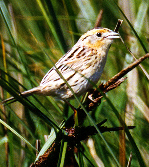
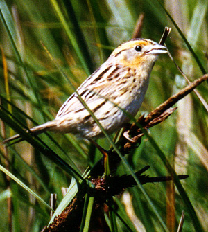

Le Conte's Sparrow Ammodramus leconteii
25 May 97, N. side of L. Earl, DN 1997-095
© 1997 Michael M. Rogers
 Le Conte's Sparrow Ammodramus leconteii
Le Conte's Sparrow Ammodramus leconteii25 May 97, N. side of L. Earl, DN 1997-095
© 1997 Michael M. Rogers
| These photographs accompany records that have been recently submitted to the committee. This record
has been ACCEPTED.  Le Conte's Sparrow Ammodramus leconteii 25 May 97, N. side of L. Earl, DN 1997-095 © 1997 Michael M. Rogers Le Conte's Sparrow Ammodramus leconteii25 May 97, N. side of L. Earl, DN 1997-095 © 1997 Michael M. Rogers |